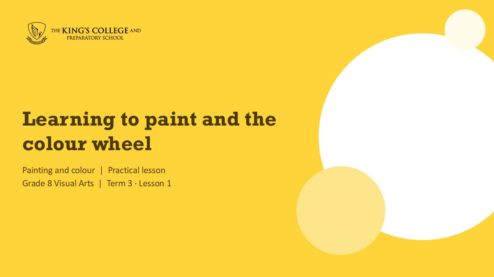

Term 3 · Lesson 1 · Practical lesson
Learning to paint: brushes, strokes and care
Start here
Today I will
- Today I will learn the parts of a brush and two ways to hold it
- Today I will try four painting techniques with analogous colours
- Today I will clean my brushes properly
Who has never painted with a brush before? Good: today everyone starts from the beginning.
Words to know
- Ferrule
- The metal band that holds the bristles to the handle. Keep paint off it.
- Pencil grip
- Holding the brush near the ferrule, like a pencil, for control and detail.
- Baton grip
- Holding the brush further back on the handle for loose, free strokes.
- Flat wash
- An even, smooth layer of one colour with no visible brush marks.
- Dry brush (scumbling)
- A brush with very little paint dragged lightly, so the colour breaks up and looks scratchy.
- Analogous colours
- Neighbours on the colour wheel, such as yellow, yellow-orange and orange.
Slides

Videos
Notes
Parts of a brush and two grips (pencil grip for detail, baton grip for loose strokes); keeping paint away from the ferrule; acrylic dries fast, so a brush is either in your hand or in the water; analogous colours; cleaning up is part of making art. (Mrs de Vries's lesson.)
Know your brush
- Bristles: The hairs that hold and spread the paint. Flat brushes for areas, round brushes for lines.
- Ferrule: The metal band. Paint that dries here ruins the brush, so dip only the bristles.
- Handle: Where you hold it: close to the ferrule for control, further back for freedom.
- Pencil grip: Like holding a pencil: for detail and edges.
- Baton grip: Held loosely further back: for big, loose strokes.
- Acrylic dries fast: Your brush is always either in your hand or in the water, never lying on the table.
Four squares, four techniques
- Flat wash: Smooth, even strokes in one direction; no gaps, no lumps.
- Thin to thick: Press lightly with the tip, then press down: one stroke grows from thin to wide.
- Dry brush (scumbling): Wipe most paint off on the towel, then drag lightly for a broken, scratchy look.
- Wet blend: Paint two colours side by side and blend where they meet while both are still wet.
A brush is in your hand or in the water, and cleaning up is part of the art.
Practical
You need: Acrylics, flat and round brushes, palette, water pots, paper towel, A4 card with four squares
Four-square brush experiment
- Choose three analogous colours plus white and put a small blob of each on your palette.
- Square 1: paint a flat wash in one colour.
- Square 2: make thin-to-thick strokes by changing the pressure.
- Square 3: dry brush (scumbling) with very little paint.
- Square 4: blend two colours wet into each other.
- Label each square in pencil when the paint is dry.
Test yourself
- What is the ferrule, and why do we keep paint off it?
- When do you use a pencil grip and when a baton grip?
- Why must your brush be in your hand or in the water?
Show answers
1. The metal band holding the bristles; dried paint there ruins the brush. 2. Pencil grip for control and detail; baton grip for loose, free strokes. 3. Acrylic dries fast and would harden in the bristles.
Finished early?
Blend three neighbouring colours in one smooth strip.
- Paint a strip on scrap card with your three analogous colours side by side.
- While they are still wet, blend where each colour meets the next.
- Paint one dry-brush stroke across the top for contrast.
- Rinse your brush straight away and rest it across the water pot.